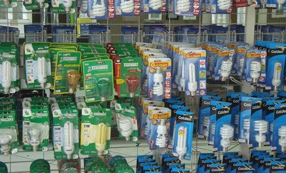

TECHNOLOGY
ALT Technologies ofrece productos autoadhesivos y troquelados innovadores, hechos a medida. Cada producto es único ya que está especialmente diseñado para cada aplicación, centrándose en la calidad, durabilidad y rentabilidad. Con un amplio conocimiento de materiales y adhesivos, creamos soluciones orientadas al cliente De acuerdo con el gobernador de la entidad, Javier Corral, con la llegada de empresas internacionales como esta proveedora de la industria automotriz, no solamente se impacta en la generación de empleos, sino que se producen valores agregados, como la formación de capital humano, la transferencia de tecnología, la capacitación técnica y la promoción de la competitividad empresarial.
Un producto es una cosa o un objeto producido o fabricado, algo material que se elabora de manera natural o industrial mediante un proceso, para el consumo o utilidad de los individuos.La palabra producto deriva del latín productus y posee diferentes significados según el área en el cual se emplee. Los productos son todos aquellos objetos u artefactos, fabricados en industrias, empresas siguiendo una línea de producción o de manera artesanal por las personas. Ahora bien, los productos se pueden diferenciar según el ciclo de vida que tengan, es decir, de utilidad. Algunos productos tienen un período de uso extenso, como el ordenador, los libros o los vehículos pero, también hay productos que expiden pronto como los alimentos, los productos de uso personal, medicamentos, entre otros..
Sin embargo, cabe destacar que la extensa o breve durabilidad de un producto es variable según sea su calidad. Es decir, los productos elaborados con materias primas o secundarias de alta calidad serán mejores y más duraderos que aquellas fabricadas a partir de materiales o recursos de poca calidad o resistencia.Asimismo, un servicio también es un producto pero, no material como, por ejemplo, la conexión a Internet, el acceso a los canales de TV, el servicio de un hotel o de la seguridad social, entre otros. De allí, que los productos se pueda diferenciar por ser tangibles o intangibles..
En economía, un producto es un beneficio, un rendimiento, una ganancia económica, un lucro, un provecho o un fruto que se obtiene del comercio, de una cosa que se vende o rinde.Existen diferentes tipos de productos, entre los que se pueden mencionar los productos naturales (materias primas), productos textiles, productos químicos, productos agrícolas, entre otros.Ahora bien, los productos forman parte de los diferentes indicadores del campo de la economía como, el Producto Interno Bruto (PIB), que es el valor total de los bienes y servicios producidos de un país en un período determinado, como un año o un trimestre..
También se incluye el Producto Nacional Bruto (PNB), que es la suma total de todos los ingresos percibidos por un país durante un determinado periodo.Asimismo, el Producto Nacional Neto (PNN) es la renta nacional, el valor total de la producción de bienes y servicios de un país en un período determinado, deduciendo el valor de los gastos que después se destina para reponer los medios productivos amortizados..
En matemáticas, el producto se refiere a la cantidad o resultado obtenido de una operación aritmética, la multiplicación de un número por otro. Los factores se multiplican dando como resultado el producto. Por ejemplo, el producto de multiplicar 7 por 8 es 56.Existen otras definiciones de producto en matemáticas u operaciones binarias, como lo son el producto cartesiano, el producto escalar en un espacio vectorial, el producto matricial, entre otros..
Ahora bien, los productos se pueden diferenciar según el ciclo de vida que tengan, es decir, de utilidad. Algunos productos tienen un período de uso extenso, como el ordenador, los libros o los vehículos pero, también hay productos que expiden pronto como los alimentos, los productos de uso personal, medicamentos, entre otros.Sin embargo, cabe destacar que la extensa o breve durabilidad de un producto es variable según sea su calidad. Es decir, los productos elaborados con materias primas o secundarias de alta calidad serán mejores y más duraderos que aquellas fabricadas a partir de materiales o recursos de poca calidad o resistencia..